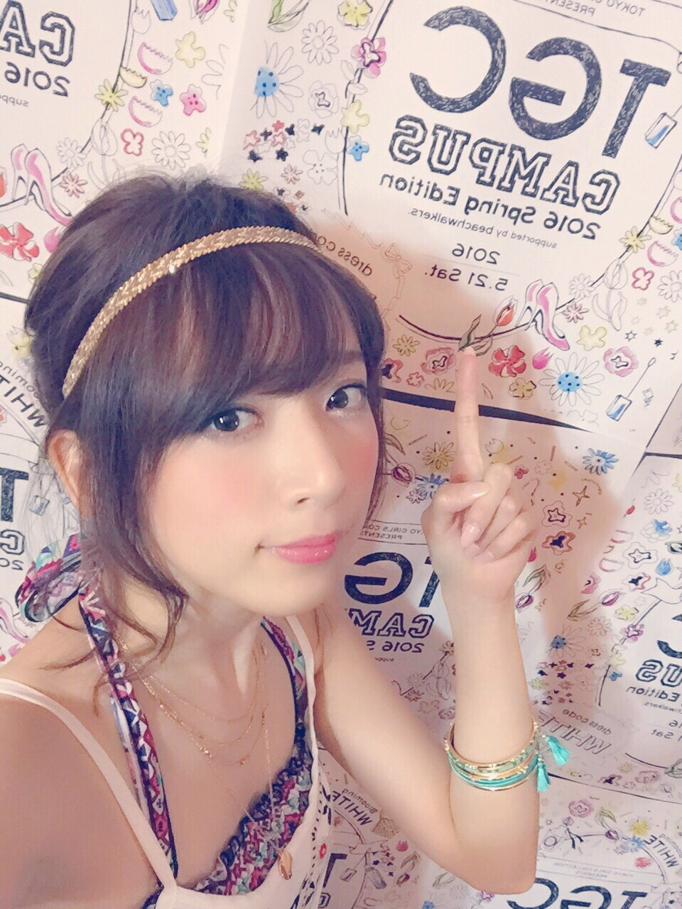

| 2016/05 27 Fri | あなたはみる貝？赤貝？ |
言ったことあるかないか分からないけど、わたし貝が大好きなの。一番好きなのはみる貝だけど、赤貝も好きだしつぶも好きだしもう何でも好きなの。
たまにスーパーで貝の刺身を買って食べるんだけど、前にも何回か買ってすごく好きだったさざえの刺身が今日は半額になってたから買ったのね。
したらさー、今日は前よりだいぶカットが大きいの。
贅沢なんだけど、コリコリ感強くて噛み切るのが先か顎がいかれるのが先かって感じ
けどやっぱり美味しいから食べる。
でもブツ切りよりスライス？的な少し小さめな切り方されてるやつが好きだなって、...
好きな貝を食べているのに更に注文をつけ出した贅沢な自分をどうか叱ってください
好きなものが少しでも特別なものから身近に感じてしまうようになったら
更に！更に！あの時の感情を！
って自分が一番高まった瞬間に戻したい、戻らせたいんだろうなあ
貝！あのちょうどいい歯ごたえと海の香り！！
あの時の感動をもう一度！！みたいな笑
なんだかそう思うとわたしの貝への情熱が浅はかなものなのかもしれないと怖くなったので、これからはスライスされた食べやすそうな貝も、ブツ切りの貝も、どちらも平等に好きでいたいと思います。
スライス２切れ食べたら必ずブツ切り一切れは食べるぞ。
絶賛発売中のCanCam！あっしゅっしゅとペアで企画やってたりするので見てちょ！！


今週はananにも出ています！素敵メイクをしてもらっていますヾ(｡･ω･｡)
キャンキャンにアンアン！母音ア！！
是非両方チェックしてね！ヾ(｡･ω･｡)
遅くなったけど、こないだサプライズゲストとして出させて頂いたTGCキャンパス...！

暖かく迎えてくれてありがとうございました！！

９月のTGCにも出演決定しているので、お楽しみに♪

足のネイルをオレンジからベビーピンクにしたのでなんだか足だけ赤ちゃんになった気分です。とてもいい
花瓶を買いました。花瓶の水を換えてる時心が穏やかになるのは、ペットに愛情を注いで満たされる気持ちに似てるの？？
ペットを飼う勇気は今の所ない...自分で精一杯だ...ネコがすごく好きだけどまさかのネコアレルギーだと発覚したあの日以来、自分に毎日そう言い聞かせてる
はー洗濯して寝よう！！
コメント(1009)
2016/05/27 23:12